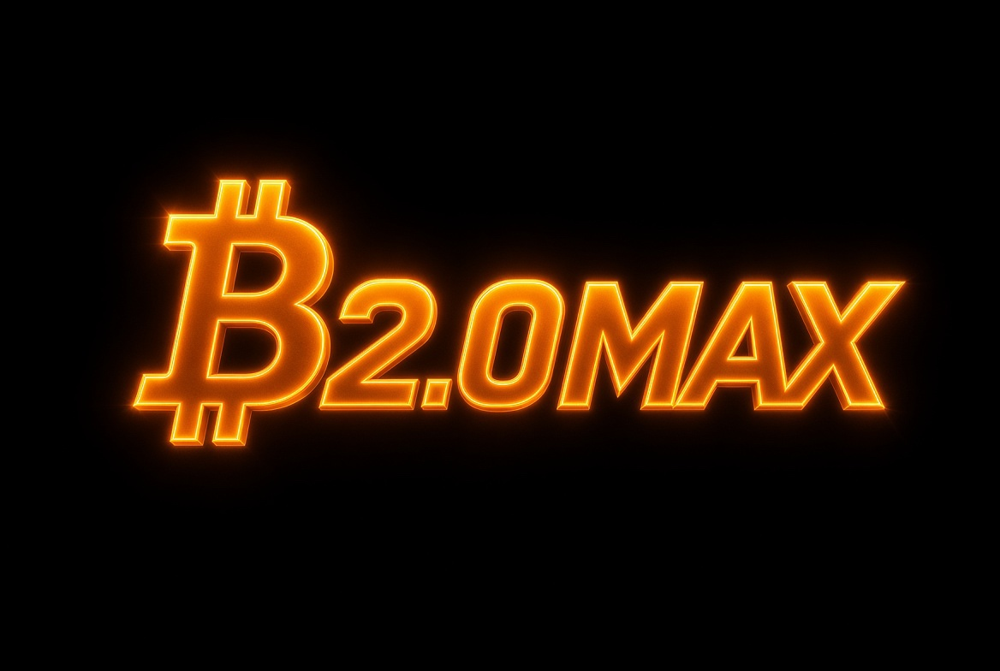

NODE STATUS
OFFLINE
Waiting for node API

Open-source blockchain infrastructure built around high-throughput blocks, peer-to-peer networking, transaction processing and independent node operation.
Real node information will be displayed here when the Bitcoin 2.0max API is connected.
Recent Bitcoin 2.0max blocks will appear here when the node backend is connected.
| HEIGHT | HASH | TRANSACTIONS | TIME | SIZE |
|---|---|---|---|---|
|
⛓
Waiting for blockchain data
Connect a Bitcoin 2.0max node API
to display live blocks.
|
||||
Search Bitcoin Mainnet addresses and transactions.
| TXID | STATUS | BLOCK | VALUE |
|---|---|---|---|
|
₿
No transaction data yet
Connect the node API to display transactions.
|
|||
Monitor the software powering the network.
Build Bitcoin 2.0max from source and start your own node.
git clone https://github.com/Kushmanmb/Bitcoin-2.0max.git
cd Bitcoin-2.0maxcmake -B build -DCMAKE_BUILD_TYPE=Release
cmake --build build -j$(nproc)mkdir -p ~/.bitcoin2max
cp conf/bitcoin2max.conf ~/.bitcoin2max/bitcoin2max.conf./build/bitcoin2maxdMonitor supported blockchain addresses for donations and assets received across multiple networks.